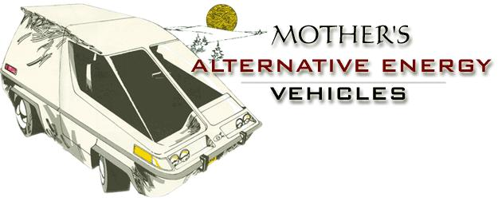
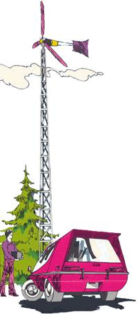
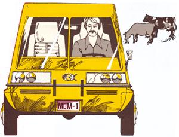
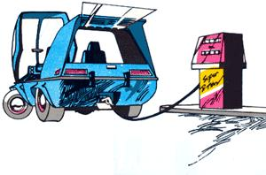

Whether or not the Arabs, the large petroleum companies and the world's politicians "solve" the current "energy shortage", present and future generations are going to have to find more ecologically sound ways of living on the earth. The most easily tapped and the cleanest reserves of fossil fuels have already been, are being or very shortly will be exploited. The free ride is drawing to a close. The "conventional" power we use from now on is going to be increasingly difficult to extract, increasingly "dirty" and increasingly expensive.
And-despite repeated assurances from political "leaders", the AEC and other vested interests-there's no magic solution just over the horizon or lurking it laboratory . . . that we see, anyway. This, then, looks to us like a very good time to [1] start scaling down the energy requirements of our gluttonous society and [2] begin an honest search for ways to harness the planet's renewable sources of power
Toward this two-phased end, THE Mother Earth News is organizing a program of "alternative" energy research and development. Members of the magazine's staff have already (November 2, 1973) unveiled a working experimental methane generator and are using data gathered from the operation of that unit to design what we hope will be a much improved and more efficient fuel-producing waste digester.
THE Mother Earth News staffers are also engaged in the construction of at least two "alternative" energy vehicles at this time (early 1974). Both are two-place, ultra-light urban automobiles. One will be powered by homemade methane and the other will run on electricity generated by MOTHER-operated windplants and solar collectors. The machines will be tested during the summer of 1974 and there's a possibility that a third (steam powered) version of the car will be put together a little later.
Why? Because, except for freak and short-term situations, the era of inexpensive gasoline is surely a thing-of the past. And we aren't going to completely design the urban sprawl out of our nation overnight. And, until we do rebuild the Unified States and Canada in a more environmentally sound manner, our citizens are going to continue both needing and wanting personal transportation.
This particular project is designed to find out whether or not renewable energy sources can safely (from both the planet's and the people's standpoint) satisfy that demand.
The first edition of MOTHER's alternative energy vehicle to drive down the street may well be the version that operates on methane produced by the decomposition of cow manure and other organic wastes.
Just for comparison purposes, if nothing else, one model of the ultra light city car will, sooner or later, be tested on the same gasoline that now sometimes seems so expensive and hard to get. It is expected that the petrol-powered machine will turn in a record of from 40 to 50 miles per gallon of regular gas. If so, this prototype may prove ideal for use as a first generation transitional vehicle... as the "missing link", so to speak, between today's gas guzzlers and the real alternative energy vehicles of the future. Eat yer heart out, General Motors!
|
 One version of Mother's little urban car will be powered by a DC electric motor. The drive unit, in turn, will derive its energy from batteries and those batteries will be charged by a wind-driven generator. Later, a parabolic collector may be used to focus the sun's rays enough to heat water and produce steam. The vapor will then be used to operate a steam engine which will be harnessed to an electrical generator to charge the batteries to drive the car. |
 |
 |
|
 |
|
|